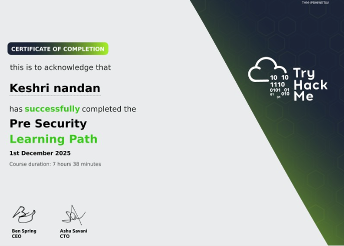
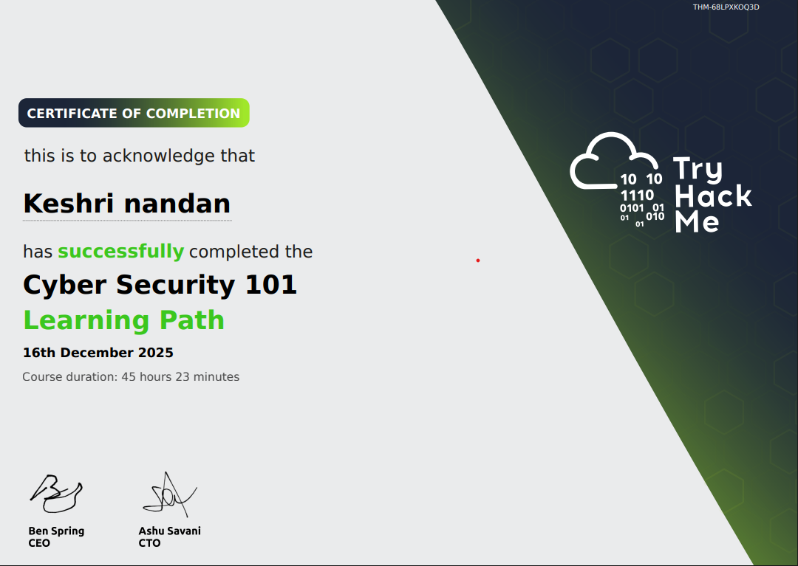
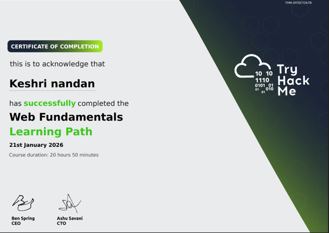
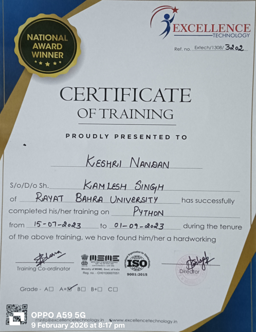
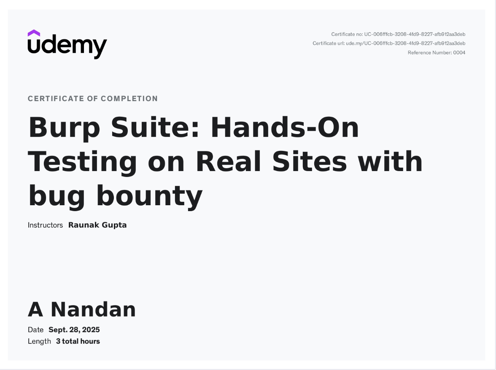

I learn cybersecurity daily and practice real world pentesting labs.
Download Resume Contact Me
With a strong foundation in cybersecurity, I specialize in penetration testing to identify
and mitigate vulnerabilities before they can be exploited. My work involves analyzing web
applications and networks, utilizing tools such as Burp Suite and Metasploit, and delivering
clear, actionable insights to enhance security measures. I am eager to further develop my skills
and contribute to strengthening organizational defenses against emerging threats.
I understand the core foundations of web security, including identification, authentication, authorization, and accountability. I know how the HTTP request and session lifecycle works and how user input flows through applications, including risks like path traversal. I also have strong networking basics in TCP, IP, and DNS, along with knowledge of how websites function, cryptography and hashing basics, and the role of firewalls and intrusion detection systems in protecting environments.
I understand networking fundamentals including types of networks, the OSI model, and how data moves through packets and frames. I studied DNS and HTTP in detail and how they support web communication. I also have practical experience using Nmap for network scanning, Wireshark and Tcpdump for packet capture, and analyzing traffic to understand how systems communicate and where security weaknesses can appear. This foundation helps me approach network security with an attacker focused mindset.
Strong working knowledge of Linux from a security perspective. Comfortable navigating and managing systems using commands such as ls, cd, find, grep, chmod, chown, and ps. Able to analyze network configuration using ip a, netstat, and ss, and capture traffic with tcpdump. Familiar with package management, basic Bash scripting, and using Linux as the primary environment for security tools and penetration testing workflows.
Burp Suite is a web security testing tool used to analyze and manipulate web traffic
Proxy:Intercepts, inspects, and modifies browser requests and server responses in real time.
Intruder:Automates attacks by sending multiple payloads to test inputs and find vulnerabilities.
Repeater: Resends and modifies requests repeatedly to test and analyze server responses.
Scanner identifies common vulnerabilities, while Decoder and Comparer assist with encoding and analyzing data during testing.
Nmap is used for host discovery, port scanning, service/version detection, OS fingerprinting, NSE-based vulnerability scanning, firewall evasion, and full network mapping. 1. Host Discovery 2. Port Scanning 3. Scan Techniques 4. Service & Version Detection 5. OS Detection 6. NSE (Nmap Scripting Engine) 7. Vulnerability Scanning 8. Firewall / IDS Evasion 10. Network Mapping 14. FTP, SSH, DNS, SNMP Scripts nmap --script ftp-anon nmap --script ssh-auth-methods nmap --script ssh-hostkey nmap --script dns-brute nmap --script snmp-inf
Metasploit is a powerful tool that can support all phases of a penetration testing engagement, from information gathering to post-exploitation.The Metasploit Framework is a set of tools that allow information gathering, scanning, exploitation, exploit development, post-exploitation, and more. While the primary usage of the Metasploit Framework focuses on the penetration testing domain, it is also useful for vulnerability research and exploit development.
SQLmap is an automated penetration testing tool that detects and exploits SQL injection vulnerabilities. It fingerprints databases, dumps data, bypasses authentication, and supports advanced techniques with minimal input, making it a fast, effective weapon for real world web security testing. .
Wireshark is a powerful network protocol analyzer used to capture and inspect real time traffic across a network. It helps identify suspicious activity, troubleshoot connectivity issues, analyze packets in depth, and understand how data moves between systems, making it essential for security analysis and network forensics.
I have a strong foundation in programming and web development, with knowledge of HTML, CSS, JavaScript, Java, Python, and C. I also understand object oriented programming concepts and database management systems, which helps me build structured, efficient, and scalable applications.

I’ve successfully completed the Pre Security Learning Path on TryHackMe, a strong foundation program designed especially for beginners entering the world of Cybersecurity. THM-IPBHIWETAV This learning path helped me understand the core building blocks of security, including: ✅ Networking fundamentals ✅ Linux basics ✅ Web concepts ✅ Security principles & threat awareness

Happy to share that I have completed the Cyber Security 101 learning path 🎉 Strengthened my understanding of core security concepts and threats 🔐 Learned how attackers think and how defenses protect systems 🧠 Built a stronger foundation for my penetration testing journey 💻 Excited to keep learning and growing in cybersecurity 🚀

xcited to share that I have successfully completed the Web Fundamentals Learning Path 🎉 Built a deeper understanding of how websites and web applications work 🌐 Learned how attackers find and exploit common web vulnerabilities 🔍 Strengthened my hands on skills in web security and testing 💻 One more step forward in my journey to becoming a penetration tester 🚀

Completed professional Python training, gaining hands on experience in programming fundamentals, scripting, and problem solving. This strengthened my technical foundation and supports my journey toward cybersecurity and penetration testing.

My course completion certificate for "Burp Suite: Hands-On Testing on Real Sites with bug bounty" 🚀 Just completed my Burp Suite Certification through Udemy! This journey helped me strengthen my skills in: 🔹 Web Application Security Testing 🔹 Vulnerability Assessment 🔹 Hands-on use of Burp Suite for real-world scenarios.